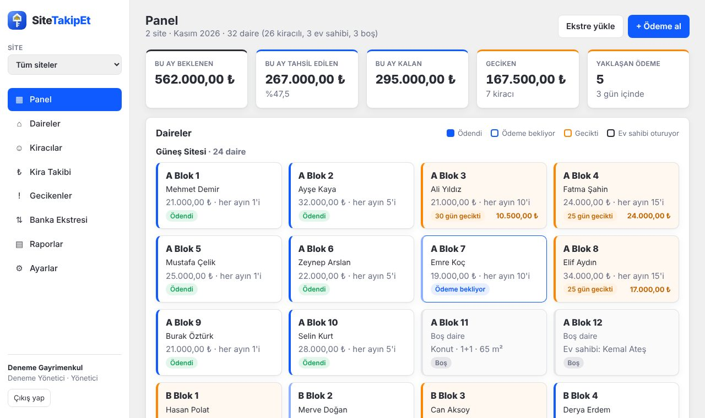

Bütün siteniz,
tek bakışta tahsil.
SiteTakipEt her ayın aidatını dairelere kendisi yazar, banka ekstresindeki havaleleri dairelerle eşleştirir, geciken aidatı ilk gün gösterir.
KASIM 2026 · GELEN HAVALELER
Ekstreyi yükleyin,
mührü sistem vursun.
Bankanızdan indirdiğiniz XLSX ya da CSV dosyasındaki her havale, dairelerle karşılaştırılıp puanlanır. Aynı ekstreyi iki kez yükleseniz de hiçbir aidat iki kez ödenmiş görünmez.
Geciken aidatı
ilk gün görün.
Vadesi geçen her aidat sarıya döner. Sakine gidecek hatırlatma; tutar, dönem ve gün sayısıyla hazır. Kopyalayın ya da tek dokunuşla WhatsApp'ta açın.
Her daire, kendi
hikâyesiyle.
Bir daireye dokunun →
Aidatı ödendi
Ve işte programın kendisi.
Panel ekranı, iki siteyi yöneten örnek bir firmanın verisiyle. Kenardan site seçilir; daireler ödeme durumuna göre renklenir.

Bu ayın aidatları
kendiliğinden
yerine otursun.
Sitelerinizi ve dairelerinizi birlikte girelim, ilk ekstrenizi beraber eşleştirelim. Excel listeniz varsa onu da aktarırız. Kiralık daireleriniz varsa kira takibi bölümü de hazır.
Ücretsiz deneyin →